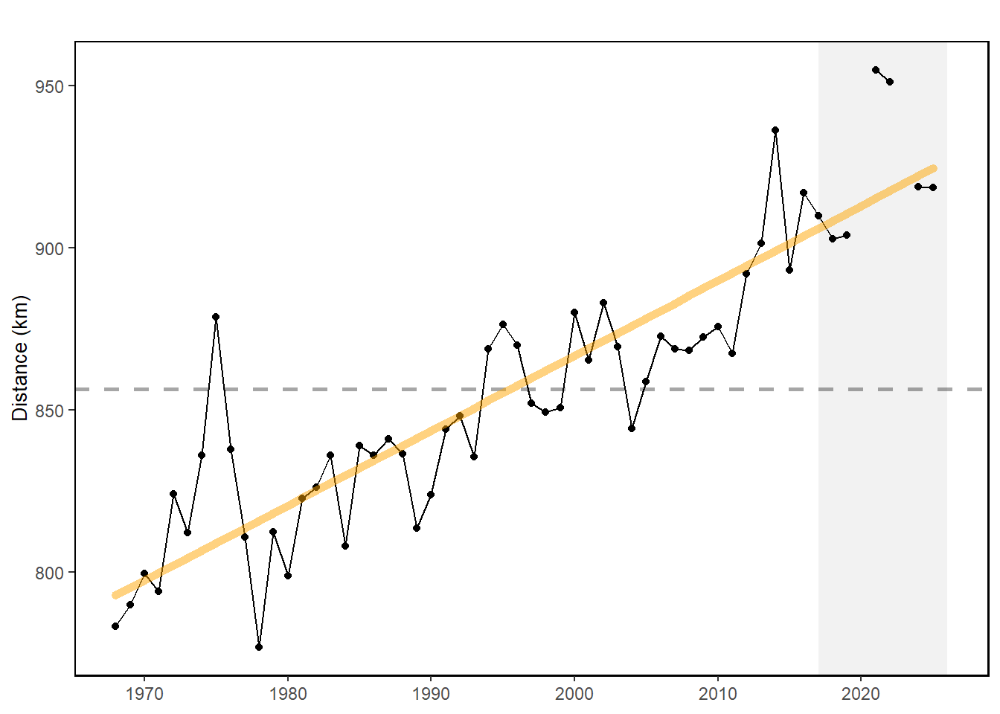
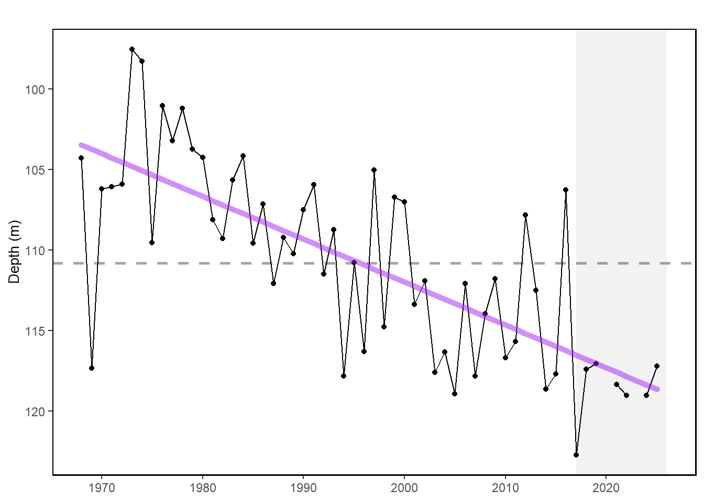

19 Species Distribution Indicators
Last updated July 23, 2026
Description: Species mean depth, along-shelf distance, and distance to coastline
Contributor(s): Kevin Friedland, Brandon Beltz
Affiliations: NEFSC
Indicator Family:
Indicator Category:
Synthesis Theme:
19.1 Introduction to Indicator
Distribution shifts for a suite of 48 commercially or ecologically important fish species were evaluated using center of gravity metrics based on NEFSC bottom trawl survey data.
Along-shelf distance is a metric for quantifying the distribution of a species through time along the axis of the US Northeast Continental Shelf, which extends northeastward from the Outer Banks of North Carolina. Once mean distance is found, depth of occurrence and distance to coastline can be calculated for each species’ positional center.
Published distribution metrics for highly migratory species are also available for comparison. There is a significant body of work addressing potential distribution changes of tuna and other HMS due to climate change.
[33] analyzed historical data from 1958 to 2004. This paper considers global distribution changes of tunas and “tuna habitat” (derived from modeling tuna relative abundance x PISCES model data), including Atlantic bluefin tuna and our BAYS tunas.
19.2 Key Results and Visualizations
Tunas and other highly migratory species (no dataset)
20 of 22 modeled tuna stocks had significant poleward shifts in their gravity center and/or one of their distribution limits. In the North Atlantic, albacore and bluefin tuna had modeled habitat shift northward [33]. Species distribution shifts have been noted for several highly migratory species, including sharks, billfish and tunas between 2002 and 2019 (Fig. 1) [34].
![Figure 1. The median location of catch each year for albacore tuna (a), bigeye tuna (b), large bluefin tuna (c), small bluefin tuna (d), skipjack tuna (e), yellowfin tuna (f), blue shark (g), shortfin mako shark (h), thresher shark (i), blue marlin (j), swordfish (k), and white marlin (l). The color of the dot indicates the year, and the error bars represent the upper and lower quartiles for a given year. To reduce overlap among median catch locations, a small jitter was added to the median latitude and longitude when appropriate. Source: reprinted from Crear et al. 2023 (Fig 3)](https://github.com/NOAA-EDAB/ecodata/raw/dev/data-raw/workshop/images/LPSFig_Spatial_HighRes-JenCudney_2025.png)
NEFSC bottom trawl captured fish (ecodata::species_dist)
The center of distribution for a suite of 48 commercially or ecologically important fish species along the entire Northeast Shelf continues to show movement towards the northeast and generally into deeper water.
along, Mid-Atlantic

depth, Mid-Atlantic

along, New England
#> NULLdepth, New England
#> NULL19.3 Implications
Temperature change is a major driver of changing fish distributions [35]. Future projection modeling suggested potential loss in northwestern Atlantic / US EEZ abundance of bluefin tuna and bigeye tuna [33,36].
Distribution shifts caused by changes in thermal habitat and ocean circulation are likely to continue as long as long-term trends persist. Episodic and short-term events (see observation highlights) may increase variability in the trends, however species distributions are unlikely to reverse to historical ranges in the short term. Increased mechanistic understanding of distribution drivers is needed to better understand future distribution shifts: species with high mobility or short lifespans react differently from immobile or long lived species.
Long-term oceanographic projections forecast a temporary pause in warming over the next decade due to internal variability in circulation and a southward shift of the Gulf Stream [37]. Near-term forecasts [38] are being evaluated to determine how well they are able to predict episodic and anomalous events that are outside of the long-term patterns.
19.5 Get the data
Point of contact: Kevin Friedland, kevin.friedland@noaa.gov
ecodata dataset: ecodata::species_dist
Tech Doc link: https://noaa-edab.github.io/tech-doc/species_dist.html
19.5.2 Accessibility Constraints
Contact Kevin Friedland, kevin.friedland@noaa.gov for data access